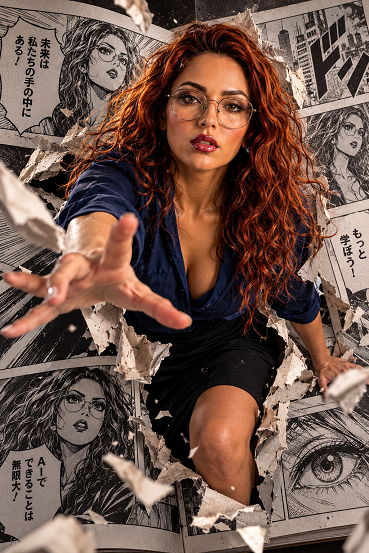

SALGO DE LAS PÁGINAS IA

MANUAL TÉCNICO Y DE OPERACIÓN: SISTEMA DE PROMPTING "SALGO DE LAS PÁGINAS"
1. DESCRIPCIÓN GENERAL: ¿DE QUÉ TRATA EL PROMPT?
Este prompt es una plantilla avanzada de generación de imagen a imagen (Image-to-Image / Face Reference) diseñada para inteligencias artificiales generativas (como Midjourney con --cref, Stable Diffusion con IP-Adapter/ControlNet, o FLUX).
Su propósito central es crear un efecto visual de ruptura dimensional (efecto 3D hiperrealista o trompe-l'œil): toma la fotografía real de un usuario y genera una escena donde esa persona parece estar emergiendo físicamente y rasgando las páginas de una publicación (manga, cómic, libro o periódico), manteniendo un contraste absoluto entre el entorno impreso y el sujeto fotorrealista.
2. ANÁLISIS DE VENTAJAS Y FORTALEZAS TÉCNICAS
El prompt no es un simple texto descriptivo; está construido con arquitectura de ingeniería de prompts avanzada. Sus principales ventajas son:
- 🔒 Blindaje de Identidad Facial (Identity Locking): Dedica una sección completa y reiterativa a la retención de rasgos (ojos, estructura, edad, vello facial). Esto evita el "síndrome de embellecimiento" o la sustitución del rostro por modelos genéricos de la IA.
- 🧩 Modularidad por Variables ([ ELEGIR UNA OPCIÓN ]): Permite obtener cinco estilos artísticos radicalmente distintos (desde la estética vintage de un manuscrito hasta el pop art de un cómic americano) usando el mismo esqueleto base sin desconfigurar la iluminación o la pose.
- 💥 Erradicación del "Efecto Sticker / Collage": El principal problema de las IAs al fusionar dos planos es que suelen "pegar" a la persona sobre el fondo como si fuera un recorte de Photoshop. Este prompt fuerza a la IA a calcular física de contacto: sombras oclusivas, páginas dobladas, micro-partículas flotantes y profundidad de campo.
- 🎨 Contraste de Medios Híbrido: Obliga a la IA a procesar dos estilos de renderizado en un solo lienzo: dibujo/tinta/grabado para el fondo y fotorrealismo de lente cinematográfica para el cuerpo humano, generando un impacto visual inmediato.
- 🎯 Prompt Negativo Quirúrgico: Bloquea de raíz los sesgos algorítmicos habituales (manos mutadas, ojos deformes, caras convertidas en anime o caricaturas).
3. MANUAL DE USO PASO A PASO (GUÍA OPERATIVA)
Para obtener el máximo rendimiento de este prompt, sigue este procedimiento estandarizado:
Para que la IA no invente rasgos erróneos, la foto de entrada debe cumplir los siguientes requisitos:
• Buena iluminación: Evita fotos a oscuras o con sombras duras sobre el rostro.
• Rostro despejado: Sin filtros de redes sociales, sin gafas de sol y en ángulo frontal o tres cuartos.
• Resolución media/alta: Debe verse nítida la textura de la piel y el cabello.
El prompt original contiene las 5 opciones explicadas dentro del texto. No debes pegarlo todo a la vez, ya que confundirías a la IA con instrucciones contradictorias. Debes elegir solo una.
• Dirígete a la sección TIPO DE PUBLICACIÓN y borra la lista, dejando únicamente tu elección (ejemplo: MANGA JAPONÉS).
• En la sección ESTILO VISUAL SEGÚN LA OPCIÓN, elimina los 4 estilos que no vas a usar y conserva únicamente el que elegiste.
Ejemplo de limpieza (si eliges PERIÓDICO): Conserva únicamente el bloque que dice: "Crear páginas de periódico impresas de forma realista, con columnas de texto, titulares..." y borra los bloques de Manga, Cómic, Libro y Libro Antiguo.
Casi todos los generadores separan el Prompt Positivo del Prompt Negativo:
• Campo Positivo: Pega todo el texto desde el título hasta antes de PROMPT NEGATIVO.
• Campo Negativo (Negative Prompt): Copia únicamente el listado de palabras que aparece tras el encabezado PROMPT NEGATIVO (desde "persona genérica..." hasta el final).
En Midjourney v6 / Niji:
1. Sube la foto original al chat y copia su enlace/URL.
2. Escribe: /imagine prompt: [URL de la foto] [Pega el prompt positivo editado] --cref [URL de la foto] --cw 80 --ar 9:16 --v 6.1 --no [pega aquí los negativos]
En Stable Diffusion / Fooocus / Forge:
1. Carga la foto en Image Prompt / IP-Adapter (activa ControlNet OpenPose o Depth si deseas forzar la postura).
2. Ajusta el Denoising strength entre 0.65 y 0.75 (para que cambie la escena pero conserve la identidad).
3. Pega los textos positivo y negativo en sus respectivas cajas.
4. GUÍA DE RESOLUCIÓN DE PROBLEMAS (TROUBLESHOOTING)
| Problema detectado | Causa probable | Solución rápida |
|---|---|---|
| La persona parece dibujada (estilo anime/cómic). | La IA extendió el estilo del fondo al cuerpo. | Refuerza en el positivo: raw photo, 35mm photograph, real skin texture. Aumenta el peso en el negativo de: illustration, drawing, anime face. |
| La persona parece una pegatina pegada encima. | Faltan sombras de contacto y rotura física. | Añade al inicio: extreme interaction, paper wrapped around arms, paper shreds casting shadows onto the skin. |
| El rostro no se parece al de la foto. | Parámetro de referencia facial muy bajo o foto base confusa. | En Midjourney usa --cw 100. En Stable Diffusion sube el peso de IP-Adapter a 0.85 o usa un modelo auxiliar como ReActor/Roop. |
| Aparecen dos personas en la imagen. | La IA interpretó "la persona de la foto" y "la persona del libro" por separado. | Añade al negativo: two people, duplicate person, twin, crowd. |
PROMPT — "SALGO DE LAS PÁGINAS" Usa la fotografía subida por el usuario como referencia principal y única para la identidad de la persona. Conserva con máxima fidelidad su identidad reconocible: rostro, estructura facial, edad aparente, tono de piel, cabello, peinado, barba o vello facial, gafas, rasgos distintivos, proporciones corporales y apariencia general. La persona debe seguir siendo claramente reconocible como la misma persona de la fotografía original. NO reemplazar el rostro. NO convertir a la persona en un personaje genérico. NO modificar innecesariamente sus rasgos. NO cambiar su identidad. ━━━━━━━━━━━━━━━━━━━━━━━━━━━━━━ TIPO DE PUBLICACIÓN ━━━━━━━━━━━━━━━━━━━━━━━━━━━━━━ [ ELEGIR UNA OPCIÓN ] MANGA JAPONÉS CÓMIC PERIÓDICO LIBRO LIBRO ANTIGUO ━━━━━━━━━━━━━━━━━━━━━━━━━━━━━━ CONCEPTO PRINCIPAL ━━━━━━━━━━━━━━━━━━━━━━━━━━━━━━ Crear una escena fotográfica cinematográfica y fotorrealista en la que la persona parece estar SALIENDO FÍSICAMENTE DEL INTERIOR DE LA PUBLICACIÓN. La persona no está simplemente colocada delante de una página. La persona debe parecer que EXISTÍA DENTRO DE LA PUBLICACIÓN y acaba de atravesar sus páginas para entrar en el mundo real. El cuerpo atraviesa físicamente la superficie de las páginas. Crear una ruptura tridimensional alrededor del cuerpo con: - páginas rasgadas - papel doblado hacia afuera - bordes de páginas levantados - fragmentos de papel volando - pequeñas partículas - pliegues realistas - sombras de contacto - profundidad entre diferentes capas de papel El torso, brazos o piernas pueden encontrarse parcialmente fuera de la publicación mientras otra parte del cuerpo todavía permanece dentro de ella. La transición entre la persona y las páginas debe ser físicamente convincente. La escena debe transmitir inmediatamente: "ESTA PERSONA ESTÁ SALIENDO DEL LIBRO." ━━━━━━━━━━━━━━━━━━━━━━━━━━━━━━ ESTILO VISUAL SEGÚN LA OPCIÓN ━━━━━━━━━━━━━━━━━━━━━━━━━━━━━━ SI ES MANGA JAPONÉS: Crear una publicación manga japonesa de alta calidad, predominantemente en blanco y negro, con entintado profesional, tramas, viñetas dinámicas, líneas de velocidad, expresiones dramáticas y onomatopeyas integradas en las páginas. La persona permanece completamente FOTORREALISTA mientras el universo del manga permanece ilustrado. Crear un contraste espectacular entre la persona real y las páginas manga. SI ES CÓMIC: Crear una historieta occidental premium con ilustraciones dinámicas, tinta profesional, colores intensos, halftone, viñetas, líneas de acción, efectos gráficos y grandes onomatopeyas. La persona permanece fotorrealista y rompe físicamente las páginas del cómic. SI ES PERIÓDICO: Crear páginas de periódico impresas de forma realista, con columnas de texto, titulares, fotografías, pequeños anuncios, tinta, textura de papel periódico y ligeras imperfecciones de impresión. La persona rompe físicamente la página y sale hacia el espectador. Los titulares, fotografías y columnas deben deformarse alrededor de la zona donde la persona atraviesa el papel. SI ES LIBRO: Crear un libro moderno y elegante de alta calidad, con páginas color marfil, tipografía editorial, ilustraciones y elementos gráficos impresos. Mostrar múltiples páginas superpuestas. La persona emerge desde el interior del libro, rompiendo y doblando varias páginas mientras se proyecta hacia el espectador. SI ES LIBRO ANTIGUO: Crear un libro antiguo auténtico con papel envejecido, textura fibrosa, manchas naturales, bordes gastados, pergamino, tinta antigua, grabados, ilustraciones históricas, ornamentos y capitulares. La persona atraviesa violentamente las páginas antiguas. Los fragmentos de pergamino vuelan alrededor del cuerpo. La escena debe parecer una fotografía cinematográfica de una reliquia histórica que cobra vida. ━━━━━━━━━━━━━━━━━━━━━━━━━━━━━━ PERSONA Y MOVIMIENTO ━━━━━━━━━━━━━━━━━━━━━━━━━━━━━━ Mantener la ropa y apariencia originales de la fotografía siempre que sea posible. Adaptar ligeramente la pose únicamente cuando sea necesario para crear una salida física convincente. La persona debe estar realizando una acción dinámica de avance hacia la cámara. Una mano puede haber atravesado primero la página. Una pierna puede estar todavía dentro del libro. El torso puede estar fuera mientras parte del cuerpo permanece rodeada por páginas rasgadas. Crear sensación de movimiento congelado en el instante exacto en que la persona rompe la publicación. ━━━━━━━━━━━━━━━━━━━━━━━━━━━━━━ PROFUNDIDAD Y PERSPECTIVA ━━━━━━━━━━━━━━━━━━━━━━━━━━━━━━ Crear una composición tridimensional extremadamente realista. La publicación debe ocupar prácticamente todo el fondo. La persona debe encontrarse en el plano central y sobresalir claramente hacia el espacio real. Utilizar perspectiva cinematográfica y profundidad de campo. Algunos fragmentos de papel deben encontrarse muy cerca de la cámara y aparecer ligeramente desenfocados. Otros elementos deben permanecer detrás de la persona. Crear múltiples planos de profundidad. El resultado debe parecer una fotografía tomada justo en el momento en que la persona atraviesa físicamente la publicación. NO crear un collage. NO crear una composición dividida. TODO debe pertenecer a una única escena continua. ━━━━━━━━━━━━━━━━━━━━━━━━━━━━━━ REALISMO ━━━━━━━━━━━━━━━━━━━━━━━━━━━━━━ Fotorrealismo de alta gama. Rostro extremadamente nítido y reconocible. Piel realista. Cabello realista. Ropa con textura realista. Papel con fibras y textura física visible. Tinta y pigmentos impresos físicamente sobre el papel. Sombras de contacto realistas. Iluminación coherente entre la persona y la publicación. Perspectiva físicamente correcta. Reflejos y sombras naturales. Profundidad tridimensional convincente. Alta nitidez. Detalle extremo. Calidad cinematográfica. ━━━━━━━━━━━━━━━━━━━━━━━━━━━━━━ ILUMINACIÓN ━━━━━━━━━━━━━━━━━━━━━━━━━━━━━━ Iluminación cinematográfica realista. La luz que ilumina a la persona debe coincidir exactamente con la iluminación existente en las páginas. Crear sombras de contacto donde el cuerpo toca y rompe el papel. Iluminar correctamente los bordes rasgados. Crear pequeñas sombras entre las diferentes capas de páginas. Utilizar separación visual entre la persona y el fondo sin perder la integración física. ━━━━━━━━━━━━━━━━━━━━━━━━━━━━━━ COMPOSICIÓN ━━━━━━━━━━━━━━━━━━━━━━━━━━━━━━ Composición vertical cinematográfica. La persona es el protagonista absoluto. Encuadre dinámico. Perspectiva ligeramente angular. Sensación de movimiento hacia la cámara. Algunos fragmentos de papel pueden salir hacia el objetivo. El efecto de perspectiva debe reforzar la sensación de que el personaje está atravesando el plano 2D y entrando en el espacio 3D. ━━━━━━━━━━━━━━━━━━━━━━━━━━━━━━ RESULTADO FINAL ━━━━━━━━━━━━━━━━━━━━━━━━━━━━━━ Crear una imagen espectacular, fotorrealista y cinematográfica. La primera impresión debe ser: "¡Parece que esta persona salió de las páginas!" La diferencia entre el mundo impreso y la persona real debe ser evidente, pero ambos mundos deben integrarse físicamente mediante iluminación, sombras, perspectiva, papel rasgado y profundidad. El resultado debe parecer una escena imposible pero fotografiada de forma completamente realista. ━━━━━━━━━━━━━━━━━━━━━━━━━━━━━━ PROMPT NEGATIVO ━━━━━━━━━━━━━━━━━━━━━━━━━━━━━━ persona genérica, identidad alterada, rostro diferente, rostro irreconocible, cambio de edad, cambio de identidad, rostro deformado, cara artificial, piel plástica, apariencia CGI barata, cuerpo deformado, anatomía incorrecta, manos deformes, dedos adicionales, dedos fusionados, brazos adicionales, piernas adicionales, extremidades duplicadas, cuerpo duplicado, persona duplicada, persona pegada delante del fondo, persona flotando, persona recortada, efecto sticker, collage, fotomontaje evidente, fondo plano, página plana, falta de profundidad, publicación digital sin textura, papel sin textura, iluminación incoherente, sombras incorrectas, perspectiva incorrecta, falta de integración entre persona y publicación, bordes artificiales alrededor del cuerpo, recorte visible, personaje completamente convertido en dibujo, rostro convertido en anime, rostro cartoon, baja resolución, desenfoque facial, rostro borroso, ojos deformes, dientes deformes, proporciones incorrectas, textura artificial, composición dividida, paneles separados, múltiples escenas, múltiples personas, duplicación del sujeto, pérdida de identidad, pose rígida, falta de movimiento, falta de interacción física con las páginas